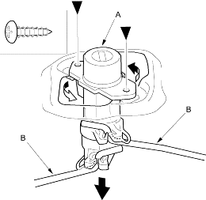
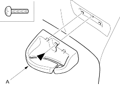
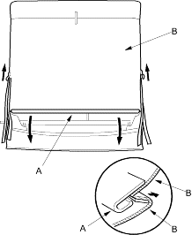

- Remove the rear shelf (see page 20-35).
- Disconnect the cylinder rods from both seat-back latches.
- Remove the screws, then remove the seat-back lock cylinder (A) and cylinder rods (B).
Fastener Locations
 : Screw, 2
: Screw, 2

- Install the lock cylinder in the reverse order of removal and note these items:
- Make sure the cylinder rod is connected securely.
- Make sure the seat-back opens properly.
NOTE:
- Take care not to tear the seams or damage the seat covers.
- Put on gloves to protect your hands.
- Remove the seat back, refer to the '01 M CIVIC Shop Manual, P/N. 625A00 on this CD (see page 20-95).
- On the left seat-back: Remove the screw, then remove the centre belt guide (A).
Fastener Location
: Screw, 1

- Release the hook (A) and unzip the seat-back cover (B). The left seat-back is shown, the right seat-back is similar.
